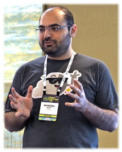

Three sessions on memory control groups
Background reclaim
Yang Shi ran a session to discuss one of those differences: the lack of background reclaim inside control groups. He started by noting that there are whole classes of applications that do not respond well to latency spikes; high-speed trading is one such area. But a latency spike is exactly what happens whenever a process is forced into direct reclaim, which is a way of making the process do some of the work to free up memory to satisfy its own allocation requests. The system as a whole uses a kernel thread (kswapd) to perform reclaim in the background, but no such mechanism exists for control groups. That means that processes running under the memory controller can be made to perform direct reclaim when the control group approaches its limit, even if the system as a whole is not running short of memory.
Shi's question was: why not have background reclaim for memory control groups as well? Michal Hocko responded that this idea has been considered in the past. A system can have a lot of control groups, though, which would lead to a lot of kernel threads running to perform this reclaim. Those threads could end up eating a lot of CPU cycles which, in turn, could enable one control group to steal time from others, thus breaking the isolation between them. Fixing that problem would require putting the kernel thread inside the control group itself so that it could be throttled by the CPU controller, but that is not currently possible.
That notwithstanding, Shi has been working on a solution based on a patch posted by Ying Han back in 2011. It allows a set of memory watermarks to be applied to a control group; when the watermarks are set, a kernel thread will be created to enforce them. The current implementation works by scanning the local control-group least-recently-used list; it does not currently support child groups. The result is working at Alibaba; the code can be found in this repository. It has not yet been cleaned up for merging into the mainline.
That cleaning up could take a while, because there are several problems with the current implementation. It creates kernel threads, which have already been noted to be a problem. The lack of hierarchical reclaim will be a sticking point, since the memory controller is otherwise fully hierarchical. The per-group kswapd thread can interfere with the global one. And the whole thing only works with the version-1 control-group ("cgroupv1") interface. All of these issues would need to be addressed before the patch could go upstream.
Rik van Riel suggested that workqueues could be used instead of kernel threads. The CPU-accounting issues would remain, but there would not be a lot of idle kernel threads sitting around. Dave Hansen noted that the original patch came out of Google and asked whether Google uses it now; Hugh Dickins responded that Google isn't using it now, but might start if the code found its way upstream. Johannes Weiner asked why the cgroupv2 API is not supported, since the reclaim code is the same for both; Shi responded that there is a lot of legacy code at Alibaba that prevents moving to cgroupv2.
Hansen asked if the kernel threads are really a problem, given that they are relatively lightweight. Hocko said that the main problem is the lack of CPU-usage accounting; Dickins said that is one of the reasons why Google doesn't use this mechanism. Weiner said that the accounting issues could probably be fixed, but only in the cgroupv2 API, which would ensure that the CPU and memory controllers are managing the same set of processes.
Andrew Morton questioned the need for a kernel thread; instead, the kernel could just fork a thread in the context of a process running in the group. This idea drew some interest, resulting in some parallel conversations on how it might be made to work. There are, evidently, patches inside Google for "threshold events" that could be used to trigger the launching of this reclaim thread. But Weiner said that the cgroupv1 memory controller had some of this functionality, and the result was a lot of complexity and run-time cost. It would be more straightforward, he said, to just find a way to annotate a kernel thread.
As time ran out in the session, Shi moved on to a related problem: direct compaction. Beyond reclaim, processes can also be drafted to move pages around in memory for defragmentation purposes. It is expensive, Shi said, and there is no way to control when it is triggered. He suggested adding a per-process flag that would cause the kernel to skip direct compaction, even when there does not appear to be any other way to satisfy an allocation request. Instead, an ENOMEM error would be returned and the kcompactd kernel thread would be kicked.
Weiner said that disabling direct compaction in this way is an invitation for visits from the out-of-memory killer. Hocko, instead, worried that returning ENOMEM in random places would tickle bugs in code that is not really prepared for allocation failures. In the end, the only real agreement was to continue talking about the problem in the future.
Swap accounting
Shakeel Butt ran two sessions the following day to cover issues that have come up with memory control groups at Google. The first of those is a change of behavior depending on which version of the control-group API is in use. In particular, there is a difference on how the limits on memory and swap use are set:
- In cgroupv1, there is a single limit (memory.memsw.limit_in_bytes) that applies to the sum of RAM and swap usage by the group. Swapping a page in or out does not change a group's accounted usage under this limit.
- In cgroupv2, there are two limits (memory.max and memory.swap.max) are accounted independently. Swapping a page out will decrease the measured memory usage and increase the swap usage.
This change was made because swap usage is seen as a fundamentally different resource requirement; in particular, swapping involves block I/O operations.
This change has created trouble for Google, though. A common situation
there is to have multiple instances of the same job running in different
data centers. Each center is run independently and is trying to maximize

The advantage of the cgroupv1 interface, Butt said, is that the people submitting jobs don't need to know anything about what resources will be available when the jobs run. They will get consistent behavior whether swap is available or not. That is no longer true with cgroupv2; this problem is keeping Google from moving off of cgroupv1.
The memory-management developers were seemingly unconvinced that there is a real problem here, though. Weiner argued that memory and swap are not the same thing, so it does not make much sense to conflate them. Dave Hansen suggested just giving every group some swap space for free. Hansen and Weiner both pointed out that the separate controls for memory and swap give the administrator some control over the quality of service received by each group.
By the end of the session, it seemed unlikely that much is going to change. Dickins said that Google would probably keep the old behavior internally regardless of what happens with the mainline kernel. It is "peculiar from a cgroup point of view", he said, but the cgroupv1 behavior proves to be helpful in the real world.
OOM or ENOMEM?
Butt's other topic was behavior when memory runs out. If the system as a whole goes into an out-of-memory (OOM) state, the OOM killer will start killing processes in response to page faults or system calls that try to allocate memory. If a memory control group hits its limits, OOM kills will still happen on page faults, but system calls will return an ENOMEM error instead. This behavior is rather inconsistent, he said.
Hocko admitted that this difference in behavior was not an explicit design decision; instead, it is a workaround to prevent lockups. The OOM killer is able to delegate the task of killing processes to user space; this is a useful feature, but it can lead to deadlocks in the control-group setting, where it is highly likely that the process trying to allocate memory holds locks that will block the killing of the others. To avoid this problem, control-group OOM killing is only done in contexts that are known to be lock-free.
Since that decision was made and implemented, he said, the OOM reaper has been added to the kernel. The reaper is able to deprive an OOM-kill victim of most of its memory, even if the process itself is unable to exit because it is waiting on locks. So perhaps the kernel could move back toward consistent behavior in this case.
Alternatively, the kernel could defer the summoning of the OOM killer until the allocating process returns to user space. One potential problem there is "runaway allocations" — kernel code that loops allocating more and more memory without checking for fatal signals between allocations. Code like that simply needs to be fixed, of course. Meanwhile, things could be improved by letting the allocator dip into reserve memory when an OOM killer episode is on the horizon. Doing so risks breaking the isolation between groups, Weiner said, but it would help to avoid deadlocks.
The conclusion at the end is that the current behavior is clearly a bug
that is in need of fixing; patches can be expected soon. There may also be
patches instrumenting the kernel (for debug builds) to detect places where
a series of allocations is performed without checking for signals.
| Index entries for this article | |
|---|---|
| Kernel | Control groups/Memory controller |
| Kernel | Memory management/Out-of-memory handling |
| Conference | Storage, Filesystem, and Memory-Management Summit/2018 |
Posted May 2, 2018 13:26 UTC (Wed)
by clugstj (subscriber, #4020)
[Link]
Why would anyone try to do high-speed trading inside a control group? If it's that time critical, buy another server.
Posted May 4, 2018 21:59 UTC (Fri)
by meyert (subscriber, #32097)
[Link] (1 responses)
Posted May 8, 2018 22:59 UTC (Tue)
by shak (subscriber, #104760)
[Link]
Given the above scenario/restrictions and cgroup-v2, the two limits can not be set statically by job scheduler as it can not provide a consistent behavior. To provide consistent behavior, a user space controller has to dynamically keep adjusting the two limits. Involving user space in such decisions basically complicates the system.
Three sessions on memory control groups
Three sessions on memory control groups
Wouldn't that solve the problem?
Three sessions on memory control groups